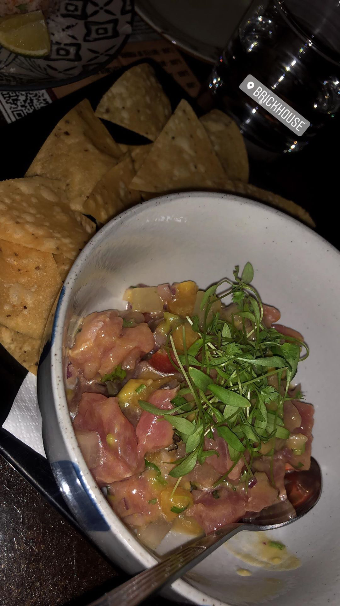
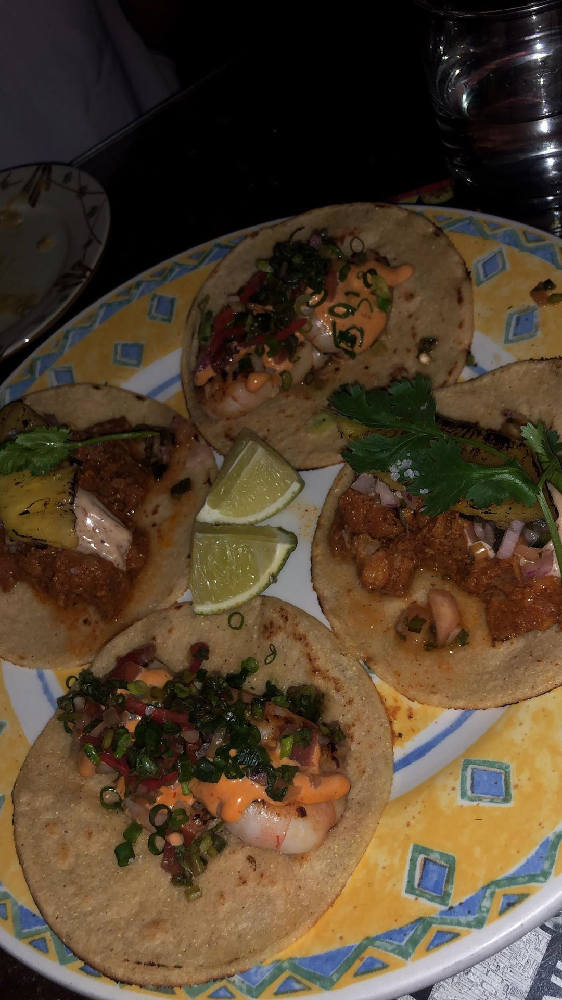

Latin-American Food
Latin American cuisine is the typical food common to the countries and cultures of Latin America. The spices used in the dishes are what make Latin American flavors so distinct. One of the more popular Latin American cuisines in Hong Kong is Mexican food, which more so hails from the Central American region.
Mexican
11 Westside


Location: 1/F The Hudson, 11 Davis St, Kennedy Town, Hong Kong
11 Westside is opened by L.A.'s very own Taco King, Esdras Ochoa, who started his career opening his taco truck in LA. After visitng Hong Kong and receiving an offer from his new business partners, he opened up 11 Westside in Kennedy Town. The restaurant has seating indoors and outdoors, with a "speakeasy" at the back of the restaurant. Not only are the tacos there made from traditional ingredients, but Ochoa also learned to use some local ingredients to create specials like pork-belly taco.
Brickhouse
 
Location: 20A D'Aguilar St, Central, Hong Kong
Tucked into a narrow side street off of Lan Kwai Fong's main D'Aguilar Street, Brickhouse is a late night Mexican bar and restaurant. They offer a taco sharing platter where diners can choose 5 of Brickhouse's signature tacos featured on the menu which is good for sharing. Brickhouse also offers late night "brunch" on Saturday nights from 8-10:30pm, includes free flow and unlimited servings of a range of dishes that Brickhouse does best. The restaurant has a very chill vibe, great for catching up with friends and good location for social gatherings. Although their food is packed with flavor, the restaurant setting might not be for everyone. It's dimly lit and cosy, definitely a hidden gem (the fact that it's literally hidden in a back alleyway).